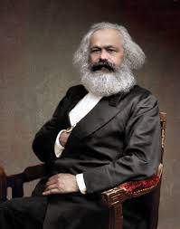

¿Quien es Karl marx?

HISTORIA
Karl Marx fue un filósofo y economista que dedicó su vida a analizar y criticar el capitalismo. Participó en círculos intelectuales radicales, lo que lo llevó al exilio, donde conoció a Friedrich Engels y junto a él escribió "El Manifiesto Comunista" en 1848. Desarrolló la teoría del materialismo histórico, que explica la historia como una lucha de clases, y su obra más importante, "El Capital", analiza el sistema capitalista y sus contradicciones. A pesar de sus aportes, vivió en la pobreza y dependió del apoyo de Engels. Fue una figura clave en la organización de los movimientos obreros y su legado influyó profundamente en la política y la economía del siglo XX. Falleció en 1883.
NACIONALIDAD
Karl Marx era de nacionalidad alemana. Nació el 5 de mayo de 1818 en Tréveris, una ciudad que en ese momento formaba parte del Reino de Prusia, dentro de lo que hoy es Alemania.
INFLUENCIAS
- Georg Wilhelm Friedrich Hegel: Su dialéctica influyó en el pensamiento de Marx, quien la adaptó al materialismo.
- Ludwig Feuerbach: Su materialismo influyó en la crítica de Marx a la religión y su enfoque en lo material.
- Adam Smith: Su teoría del valor-trabajo fue fundamental para la crítica económica de Marx.
- Pierre-Joseph Proudhon: Su crítica al capitalismo inspiró las ideas de Marx sobre la propiedad y la economía.
CONTRIBUCIONES
- Materialismo histórico: La historia se explica por la lucha de clases y las estructuras económicas determinan las instituciones sociales y políticas.
- Crítica al capitalismo: El capitalismo explota a los trabajadores mediante la apropiación de la plusvalía, generando desigualdad y alienación.
- Revolución proletaria: Marx defendió que el proletariado debía derrocar al capitalismo y crear una sociedad sin clases, dando paso al socialismo y al comunismo.
- Alienación: Los trabajadores se sienten ajenos a su trabajo y a la sociedad debido a la explotación capitalista, perdiendo su esencia humana.